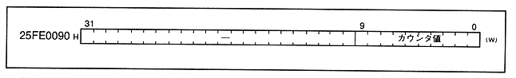
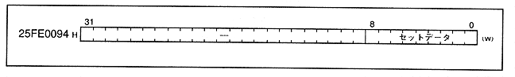
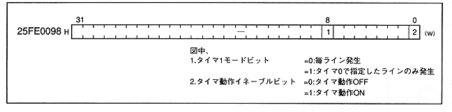

-
■ Timer 0 compare register
- Figure 1.14 shows the timer 0 compare register map. Timer 0 generates an interrupt in synchronization with the V-blank-IN interrupt (refer to Section 2.2, Interrupt Control). The operation is described in Section 2.2, and the register contents are described in Chapter 3.
Figure 1.14 Timer 0 compare register map

-
■ Timer 1 set data register
- Figure 1.15 shows the timer 1 set data register map. Timer 1 is set by an H-blank-IN interrupt (see section 2.2, interrupt control), decrements in a 7MHz cycle, and generates an interrupt when the data reaches 0. The operation is described in Section 2.2, and the register contents are described in Chapter 3.
Figure 1.15 Timer 1 set data register map

-
■ Timer 1 mode register
- Figure 1.16 shows the timer 1 mode register map. This register specifies when to generate timer 1. The operation is described in Section 2.2, and the register contents are described in Chapter 3.
Figure 1.16 Timer 1 mode register map
